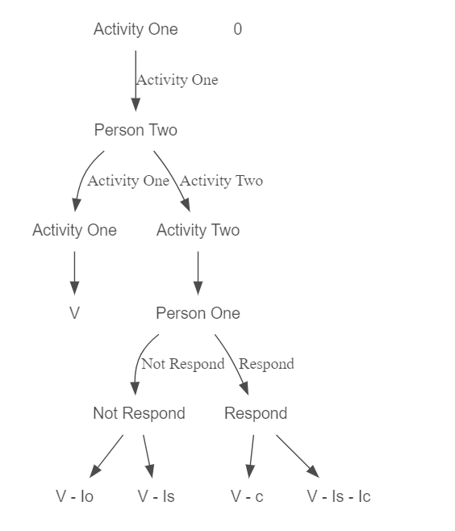

1 Economie et Identité: quelles intéractions?
L’économie de l’identité est un courant récent de la discipline.
Les travaux fondateurs d’ Akerlof et Kranton (George A. Akerlof and Kranton (2000b) ) ont mis en lumière la nécessité d’intégrer dans les modèles économiques traditionnels cette notion fondamentale qu’est l’identité.
1.1 Utilité et Identité
Pour un économiste, le concept d’utilité est central. Il s’agit d’une mesure de la satisfaction individuelle.
Un individu, par exemple un consommateur, réalise ses choix en fonction du niveau de satisfaction qu’il peut retirer. C’est son objectif, modélisé sous forme de fonction.
Dans les modèles traditionnels, l’utilité dépend de quelques variables objectives, qui ont l’intérêt d’être mesurables.
Par exemple, pour un consommateur, \(U=F(x,y)\) , où \(x\) et \(y\) sont les quantités de biens consommées.
L’apport d’Akerlof et Kranton, est d’indiquer que les choix des individus sont influencés par le sentiment qu’ils ont d’eux même, leur identité.
Enrichir les modèles traditionnels de cette nouvelle variable permettrait de mieux comprendre ce qui parfois échappe à la théorie classique.
1.2 Modèle avec Identité
Reprenons ici le modèle proposé par Akerlof et Kranton,
la fonction d’utilité d’un individu est la suivante:
\(U_j = U_j(a_j, a_j I_j)\)
où :
\(a_j\) représente les actions de l’individu \(j\)
\(a_j\) \(I_j\) capture les intéractions entre les actions de \(j\) et son identité \(I_j\)
Cette fonction d’identite \(I_j\) dépend elle même de plusieurs facteurs:
\(I_j = I_j(a_j, a_{-j}, c_j, E_j, P)\)
où :
\(a_j\) représente les actions de l’individu \(j\),
\(a_{-j}\) repésente les actions des autres individus,
\(c_j\) est la catégorie sociale à laquelle appartien \(j\),
\(E_j\) sont les caractéristiques données de \(j\),
\(P\) sont les prescriptions (ou normes sociales) associées à la catégorie \(c_j\).
Ce modèle formalise cette tension qui peut exister pour les individus entre se conformer ou non aux normes de sa catégorie sociale assignée, en fonction de la distance qui peut exister entre ses propres caractéristiques et les prescriptions assignées.
Il suppose aussi l’existence possible de sanctions de la part des pairs si les normes ne sont pas suivies (moqueries, mise à l’écart ou même violence)
Par exemple, dans leur papier (George A. Akerlof and Kranton, n.d.) complètent les théories traditionnelles de l’économie de l’éducation en expliquant le plus ou moins grand investissement scolaire des étudiants en fonction de leurs caractéristiques identitaires (les sportifs, les intellos et les rebelles)
1.3 Identité et choix des individus
L’économie étudie comment les agents font leur choix (de consommation, de production…), ces choix dépendent de l’identité des individus.
En effet, le sens que l’on a de soi, influence nos décisions, et ces décisions influencent notre identité en retour.
Dans un premier temps, la catégorie sociale à laquelle j’appartiens peut influencer mes préférences (Chen and Li (2009)) ,mes comportements pro-sociaux (Charness, Cobo-Reyes, and Jiménez (2014)) et donc mes décisions.
Dans un second temps, l’individu arbitre entre ses propres caractéristiques et les prescriptions de sa catégorie sociale (ou les prescriptions supposées).
Vais-je me conformer à ce qui est attendu? Mes propres caractéristiques sont-elles plus ou moins proches des normes en vigueur? Si je ne me conforme pas, quelle sera la réaction de mes pairs?
Cet arbitrage et cette possibilité pour autrui de répondre à mes actions a été représenté sous forme d’arbre de décision par George A. Akerlof and Kranton (2000a)

Cette friction entre adhérer ou non aux normes de ma catégorie sociale a conduit la recherche des économistes de l’identité vers les questions de conflits inter-groupes (Austen-Smith and Fryer (2005), Chakravarty et al. (2015), Fryer, Fryer, and Torelli (2010), Bénabou and Tirole (2004).)
On s’interroge sur les normes, l’adhésion ou non à ces dernières et le rôle que peuvent jouer les politiques publiques sur ces prescriptions.
Mais l’identité joue également un rôle fondamental sur les performances individuelles.
1.4 Identité et Performances
Dans une étude particulièrement intéressante, Shih, Pittinsky, and Trahan (2006) ont montré comment l’activation d’une identité particulière, ou tout du moins comment les stéréotypes associés à cette identité, pouvaient avoir un impact sur les performances individuelles.
En réalisant une étude auprès d’étudiantes asiatiques aux Etats Unis, les chercheurs ont proposé l’expérience suivante:
Un questionnaire était fourni aux participantes avant de réaliser un test de mathématiques.
Une partie des participantes répondaient à un questionnaire dont les questions portaient sur leur identité asiatique, pour les autres participantes le questionnaire activait leur identité féminine, un groupe de contrôle était également implémanté.
Ce simple questionnaire en préambule a eu des effets notables sur les performances aux tests de mathématiques réalisés ensuite, puisque en moyenne, les étudiantes dont l’identité asiatique avait été mise en évidence performaient significativement mieux aux tests de mathématiques que leurs homologues dont l’identité féminine avait été activée.
Cette étude plaide donc pour la nécessité de s’interroger sur la notion d’identité, dès lors que cette variable peut significativement avoir des répercussions sur les résultats socio-économiques des individus.
Cependant, les critiques apportées à ce nouveau courant sont notamment que ce concept fondamental d’identité est trop flou, comment intégrer dans les modèles ou bien encore dans les études empiriques cette dimension si polymorphe?
La question de la mesure de l’identité se pose alors…